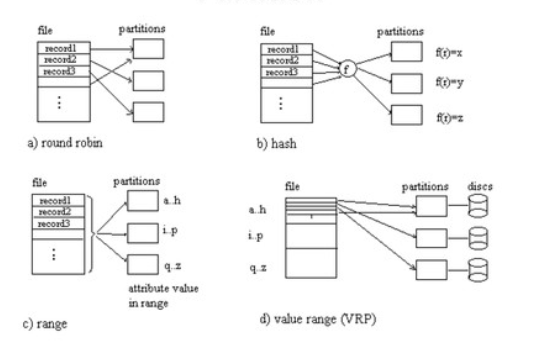
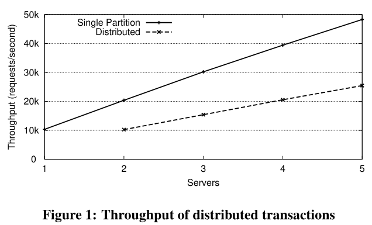
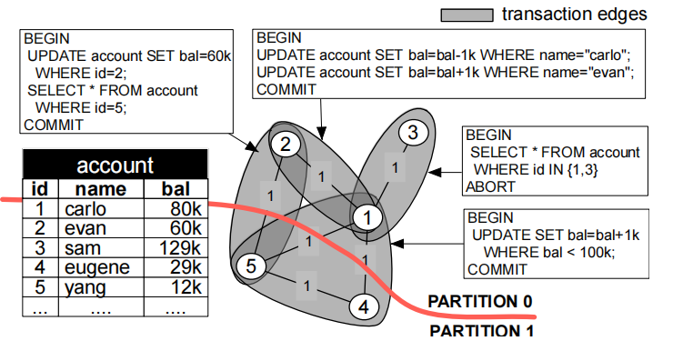
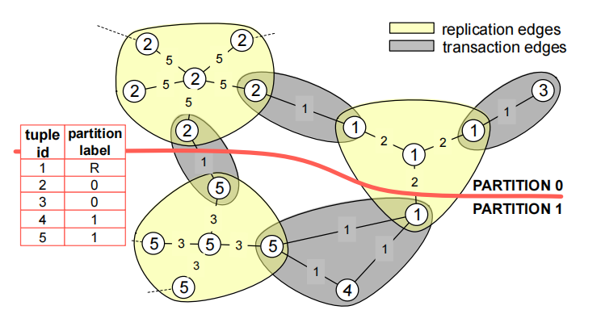

VLDB 2010 Schism论文阅读
阅读Schism: a Workload-Driven Approach to Database Replication and Partitioning笔记。这篇论文，总体来说是讲分区方法的，如何平衡分区的同时尽可能提高数据库负载，这篇论文通过将事务转化成图的角度，通过图切割算法来分区，尽可能减少跨分区事务来达到优化效果，下面开始介绍。
背景
现在工作负载越来越大，扩展的很快，所以数据需要分区存放，但是如何数据分区才能让事务尽可能的在本地或者尽量少涉及节点呢，传统方法有三种
- Round-robin分区
- Range分区
- Hash分区

但是这些方式可能适用于一些工作负载，但是还有一些工作负载，通过这些分区方式很难得到高性能，比如社交网络这种涉及少量数据的小事务的负载用以上方法就不能获得很好的性能了。因为hash以及round-robin就可能涉及多个node了，而一旦跨分区，那么吞吐量就会下降很多，range分区就会好很多，但是手动设定range也是一个很麻烦的事情，所以论文想在平衡分区负载的同时最小化跨分区事务数量，这就是Schism的目的。
Schism
一个基于事务负载生成图的数据驱动的分区系统，这个系统分为几个步骤执行
- Data pre-processing
- 输入:transactions & DB
- 输出读写集
- Creating the graph
- Nodes: tuples
- Edges: transactions
- Partitioning the graph
- 平衡的将图按边切割分区，并且按边切割复制tuples
- Explaining the partition
- 用频率高的属性生成决策树的方式去表示节点如何分区
- Final validation
- 比较出最好的分区方法，给出结果
分布式事务开销
- 事务从单个节点上获取数据
- 无额外开销
- 昂贵的分布式事务开销
- contention: 锁开销
- distributed deadlocks：解决分布式死锁
- 需要多个节点数据的复杂查询语句
- 实验查看性能对比，每个事务两个语句
- 一个是所有事务的数据都在本地
- 一个是所有事务的数据都涉及多节点

Graph Partitioning
BASIC GRAPH REPRESENTATION
节点：tuple
边 ：事务涉及到的tuples相连
边权：多少个事务涉及到某对tuple

右上角事务涉及tuple1和tuple2的数据，所以1节点和2节点之间存在边，右下角事务涉及到tuple145，则这三个节点之间都存在边，在图中，边权为多少个事务涉及到某对tuple，例如tuple1和tuple2，只有右上角的事务同时涉及到tuple1和tuple2，所以边权为1。
GRAPH WITH REPLICATION
在上面的基础之上加了Tuple-level replication。
复制逻辑
n+1 nodes:一个tuple
n：多少个事务需要这个数据
Replication edge weights:在负载中多少个事务更新了这个tuple

划分图时的几个点
- 尽量让切的边权和小
- 尽量保证分区的权值平衡
划分后，一个partition的多个相同node不需要重复存储，例如2号节点tuple只存一份，一号节点tuple存两份
并且不复制经常更新的节点
Fine-grained per tuple partitioning
红色的表，是Look-up Tables 基于经常出现在where子句中的属性构建，用于路由到数据分区
涉及到replication的时候，图变为Figure3所示，在图中某个tuple节点将出现n+1次，n是有多少个事务涉及到该tuple，而Replication edge weights是在负载中多少个事务更新了这个tuple。当图构建完成之后就需要进行图划分了，划分时需要尽量让切的边权和小以及尽量保证分区的权值平衡。划分后，一个partition的多个相同node不需要重复存储，例如2号节点tuple只存一份，一号节点tuple存两份；并且不复制经常更新的节点，例如，tuple1如果更新次数很多，那么就让tuple1只存在partition0，而不存两份，减少同步更新的开销。
EXPLAINING THE PARTITION
这个阶段想使用决策树(a machine learning classifier)通过收集(value, label)作为输入，输出一个结果range，然后按range分区 。
简而言之就是通过上一个阶段生成的数据(tuple,partition)映射来生成一个模型再分区。
FINAL VALIDATION
就是比较一下结果，再判断选哪个方案
输出拥有最小跨分区事务数量的方案
- Fine-grained per tuple partitioning，对图进行边切割的方式分区
- Range predicate partition，也就是使用决策树模型生成range的方式分区
- hash partition
- full replication
总结
1.将工作负载抽象成图的形式，数据作为节点，事务涉及到的数据对作为边，边权为多少个事务涉及到某对tuple
如Figure 2右上角事务涉及tuple1和tuple2的数据，所以1节点和2节点之间存在边，右下角事务涉及到tuple1 4 5，则这三个节点之间都存在边，而边权，如tuple1和tuple2，只有右上角的事务同时涉及到tuple1和tuple2，所以边权为1。
涉及到replication的时候，图变为Figure3所示，在图中某个tuple节点将出现n+1次，n是有多少个事务涉及到该tuple，而Replication的边权是在负载中多少个事务更新了这个tuple。
2.当图构建完成之后就需要进行图划分了，划分时需要尽量让切的边权和小以及尽量保证分区的权值平衡。
划分后，一个partition的多个相同node不需要重复存储，例如2号节点tuple只存一份，一号节点tuple存两份；
并且不复制经常更新的节点，例如，tuple1如果更新次数很多，那么就让tuple1只存在partition0，而不存两份，减少同步更新的开销。
3.通过图切割的方式确定了数据的分区方式得到了lookup table，然后把lookup table中的(tuple,partition)作为决策树的输入，输出为按谓词划分range的分区方式。最后得到的这个分区方式是一种独立于抽象图后划分分区的分区方式，它可以给定一个没有确定分区的tuple，通过生成的决策树模型去找到对应的分区节点。
系统最后通过比较这两种分区方式以及哈希分区输出最优方案作为最终分区方案。